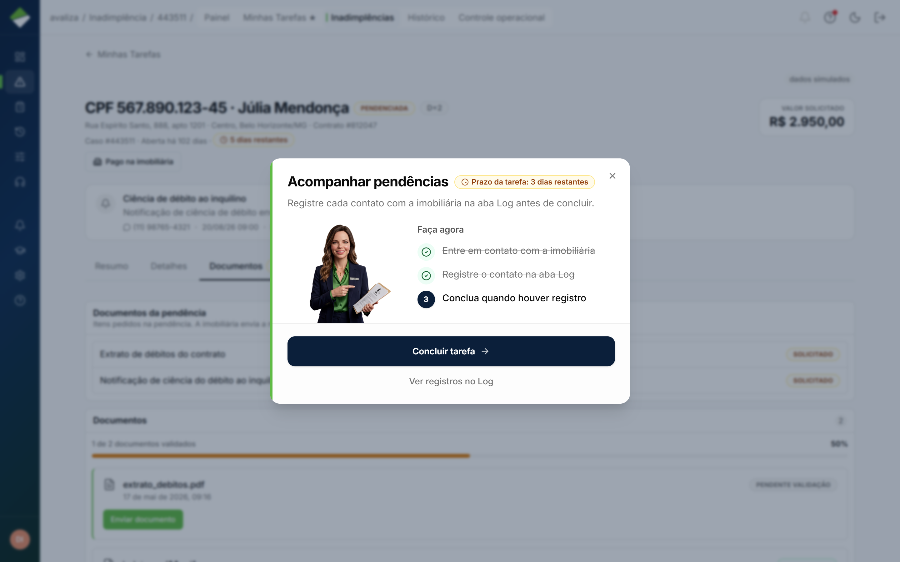
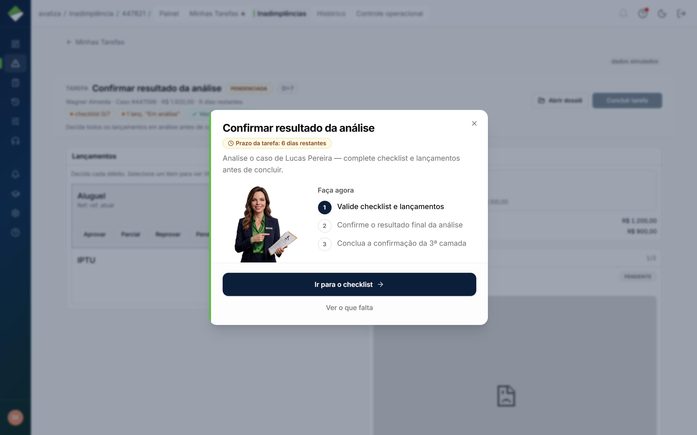

Cobrir inadimplência · jornada independente
Analisar cobertura
Dono do resultado: Inadimplência — Responsável de Inadimplência
- Gatilho
- Caso na fila pessoal do analista de IN (não na listagem geral).
- Resultado
- Aprovar, negar, pendenciar ou encaminhar. Mérito da cobertura.
- Lifecycle
- Ciclo do analista. Pode voltar depois das pendências do locatário.
- Atores na operação
- Analista de inadimplência
inadimplencia
- Analista de inadimplência
- Dono (setor)
- Inadimplência
- Outros setores
- Ninguém além do dono
Sequência interna (só aqui)
Estes momentos são obrigatórios dentro desta jornada. Não são o grafo global e não são o menu do papel.
-
Pegar a tarefa
Home do papel. Ordenada por prazo do ciclo.
-
Trabalhar o caso
Decisão, pendência, encaminhamento.
-
Dossiê de cobertura
Quando o caso pede a análise formal.
Telas (evidência)
Superfícies atuais onde este ciclo aparece. Abrir a tela não significa avançar uma etapa.

/inadimplencia/tarefas · evidência, não etapa
/inadimplencia/analise · evidência, não etapa
/inadimplencia/443511?tab=documentos · evidência, não etapa
/inadimplencia/225837?tarefa=validar_analise_inicial · evidência, não etapa
/inadimplencia/225837?tarefa=validar_analise_inicial · evidência, não etapa
/inadimplencia/449001?tarefa=confirmar_pagamento · evidência, não etapa
/cobertura/447821 · evidência, não etapa
/inadimplencia · evidência, não etapaIsto não é esta jornada
- Painel, histórico e controle operacional são capacidades do módulo, não este ciclo.
- Marcar indenização paga é jornada do Financeiro.